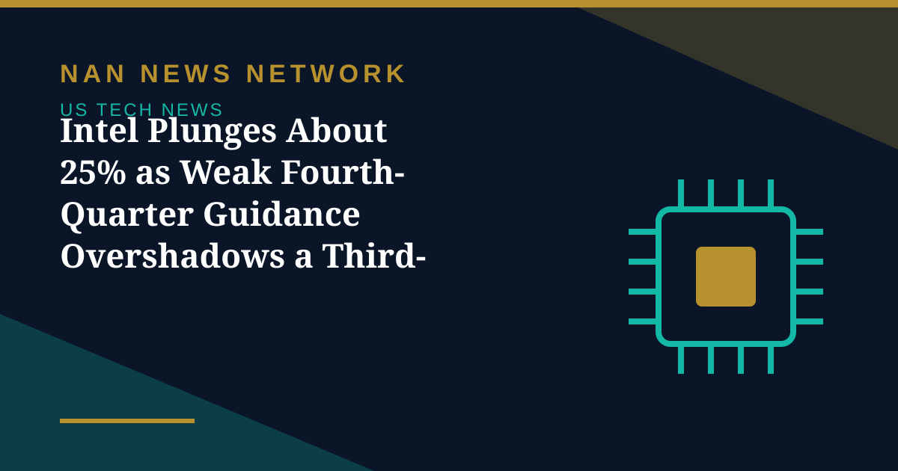

Intel Plunges About 25% as Weak Fourth-Quarter Guidance Overshadows a Third-Quarter Beat

Intel delivered the week's second big earnings shock on Friday, October 30, plunging about 25% in premarket trading after a fourth-quarter outlook that fell far short of expectations, even though its third-quarter results beat forecasts.
Guidance, not the quarter, did the damage
Intel guided to fourth-quarter revenue of about $15.5 billion at the midpoint, well below the roughly $17 billion analysts expected, and adjusted earnings per share of $0.25 against a $0.44 consensus, according to FXStreet and Invezz. The miss follows Alphabet's post-earnings plunge on Thursday and Amazon's selloff, sealing a brutal week for AI-linked stocks.
Analysts pointed to three pressures behind the warning: weak PC demand, manufacturing constraints, and heavy investment in expanding production that is expected to burn cash this year. The combination, they said, is exactly the setup where investors keep de-risking until guidance stabilizes.
Part of a wider AI selloff
The Intel warning deepened Friday's broader rout: Nasdaq futures fell more than 2%, Nvidia dropped about 3% and AMD about 8.7% in early trading, while Alphabet extended its losses after its record selloff. The selloff has reframed the AI trade for now: investors are no longer rewarding growth alone, but demanding proof that massive infrastructure spending turns into cash — and punishing any company whose outlook suggests it will not, at least not soon.
Sources: FXStreet, Invezz, Economic Times, October 30, 2026
More on US Tech News
- Amazon's AWS Jumps 39% to $46 Billion, but a $42.4 Billion Cash Outflow Sinks the Stock
- Microsoft Rises, Alphabet Falls: Free Cash Flow Becomes the AI Earnings Scorecard
- Nvidia Puts $3 Billion Into Meta as AI Partnership Deepens — and 'Circular' Worries Grow
- SK Hynix Profit Jumps More Than Sevenfold as AI Rally Faces Earnings Test
- Judge Orders OpenAI to Disclose Apple Hiring Records in Talent Dispute
- Apple Unveils M6 MacBook Pro and iMac With Faster On-Device AI
- OpenAI Launches GPT-6.1 Terra With Lower API Prices
- Musk Says SpaceX Closed $40 Billion in GPU Debt and Warns of a Neocloud Shakeout
- AI Inference Prices Have Fallen as Much as 80 Percent Since June, Analysis Finds
- White House Names Jay Clayton as AI Czar to Lead 'Super Intelligence Force'
- SpaceX Q3 2026: $14.6 Billion Revenue as Starship Flight 15 Targets a Dual-Stage Catch
- US Orders DeepSeek Stripped From Federal Civilian Systems